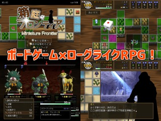

■2016-08-27 (土) 第8回ウディコン結果発表！▼
ということでついに第8回ウディコン、結果発表です！
すぐ結果一覧を見たい人は ↓ へ！
【WOLF RPGエディターコンテスト 公式ページへ】
今年は非常にクオリティの高い作品群が集まった印象があります。
本記事では上位3作品をご紹介！
（クリックで結果発表ページの各作品紹介へ移動します）
【1位】 『収穫機道ろぼふぁーむ』

特定のパターンで自動的に動くロボにうまく収穫させられるよう、
考えて水やりをして作物を育てるゲームです。
種は撒いてあるので水やりだけで作物は芽を出し、ロボは作物の上を通れません。
プレイヤーができることはただ水やりだけであるにも関わらず、
ロボットの経路もうまく考えて最適解に近付けるべく作物を育てようとすると、
かなりの頭を使う奥深さがあります。
個人的には、ゲームの導線やチュートリアルがあまりに理想系で感動した作品です。
特に「一回目は説明を読まずに好きにやらせてもらってから説明を読める」形式を
選べるチュートリアルが最高！ これは地味ながら素晴らしいテクニックです。
最初から山ほどの情報量を一気に与えられるより、
一回色々試した上で分からない部分だけ聞く方が覚えやすいですしね。
他にも、ゲームの流れやシステムのアンロックが
最後まで完全にストーリーにマッチしている点がすばらしい！
どうやれば初めての人にも分かりやすく遊んでもらえるかを考えたい身としては、
しっかりと学ばせていただきたい作品になりました。非常に完成度が高い一本です。
【2位】 『箱庭フロンティア』

これを見たとき「ああー近いネタ先にやられたーグオオー！」
と私が叫んでいた一作です。
スゴロク的にサイコロを振って移動しながら、
使用回数の少ない技やアイテムを管理しつつ、
能力を上げつつ、何とか生き残って深い階層を目指すタイプのローグライクです。
クリア後はクリアしたキャラを保存して、パーティプレイの連戦に使うことができます。
ローグライクでもこういったスゴロク的要素との組み合わせは
Steamでさえあまり見ない気がするので、さらなるブラッシュアップによって
もしかしたら海外展開も狙えるかも！？ という期待が個人的にあったりします。
海外の人って、ローグライク好きな人が日本よりだいぶ多い感触なんですよ。
プレイ中はTipsが常時表示されているのもすばらしい点！
『片道勇者』でもイーリスのアドバイスをこんな感じにすればよかったかもと
今さらながら思います（『片道勇者』の序盤だけはそれに近いのが出ますけど）。
画面端に「火山地帯は熊がいるし溶岩に落ちると即死だよ！」などと常時Tipsが
出ていれば、イーリスも空気になることもなかったでしょうに。
また、判断すべき要素が明確なところも非常に私好みです。
たとえば拙作『片道勇者』は移動のコツなどが暗黙的で分かりづらかったんですが、
この作品のような形式であれば、どこがゲームの勘どころになるか
プレイヤーの人は迷うことはありません。
勘どころは出目による移動の仕方と、
技やアイテムの管理、能力の上げ方に絞られています。
こういった分かりやすさは、次に作るゲームで目指したいところですね。
【3位】 『電子ゲームブック 自由落下』

ここで電子ゲームブック！？ と思われるかもしれません。
『ゲームブック』とはだいぶ昔に一部で流行した、
物語が分岐していく(単行)本のことです。
ページごとに短い出来事（パラグラフ）が番号付きで書かれているのですが、
なんとその出来事の内容は前から順番通りには書かれていません。
つまり、ただ前から順に読んでも物語の時系列を理解できない本なのです！
ですがご安心。パラグラフには、ちゃんと続きで読める行き先の番号が書かれています。
そして選択肢を選ぶ場面になると、
選択肢に応じて「走るなら１４へ」「飛ぶなら２５へ」なんて
書かれており、選択肢に応じた行き先に従って
色んなページを飛びながら物語を進めていきます。
こんな感じに、ゲームブックは物語の分岐に対応すべく発明された形式の本なのですが、
だいぶ昔にデジタルのアドベンチャーゲームに取って代わられており、
今やゲームブックは書店でも滅多に見ないと思います。
さて、ゲームブックの説明が長くなりましたが、
本作『電子ゲームブック 自由落下』の
最大の良さはデジタルゲームとアナログゲームブックの
両方の良さを兼ね備えていること！
文中の選択肢をクリックするだけで
指定の番号のパラグラフへ飛べるのはもちろんのこと、
『自分で行き先番号を指定して』パラグラフを開くことも可能になっているのです。
これによって、一度遊び切った後にまだ見てないパラグラフがないか探したり、
手がかりから見いだした番号を手動で入れて、
何が出てくるかドキドキできる場面も用意されています。
さらには物語の時間軸を任意に戻ることだって可能！
もちろんデジタルゲームの良さとして、アイテムは自動管理となっています。
アナログのゲームブック特有のワクワク感とやりやすさを調和させたこのシステムは、
シンプルながら新しい感覚で物語を楽しめる一作と言えると思います。
テキストも読みやすく仕上げられていますので、
1プレイは短いながらも文章が好きな人には特にオススメできる作品です。
ということで上位3作品を紹介させていただきましたが、いかがだったでしょうか？
第8回ウディコンは、他の上位作品もこれらに並ぶほど魅力的な作品ばかりです！
よければぜひ、以下から第8回結果発表ページをご覧ください！
【WOLF RPGエディターコンテスト 公式ページへ】
2016-08-27 (土)  カテゴリ: ウディタ
カテゴリ: ウディタ
 カテゴリ: ウディタ
カテゴリ: ウディタ